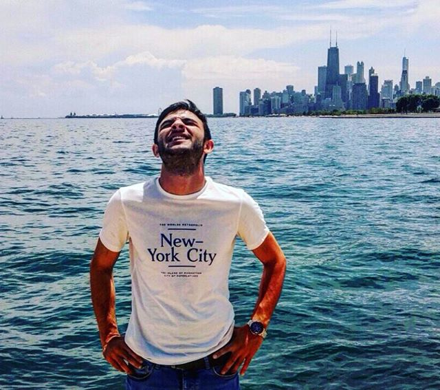

Introduction
Hi. I'd like to intoruce myself. I'm David Kansuzyan. Originally, I'm from Russia, Moscow and I moved to USA 4 years ago. Currently, I live in Louisville KY. I'm originally from Russia, Moscow and I moved to US 4 years ago. I've been struggling with setting up my goals until I found a path that made me excited and hopeful for my future. Now, I'm making this portfolio as a student of Thinkful and looking forward for a bright future as a software developer.